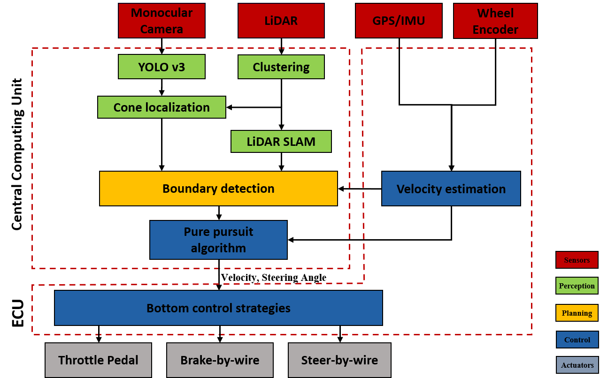

I am a Ph.D. student in Trustworthy Autonomous Cyber Physical Systems (ACPS) Lab at University of Liverpool with Prof. Xiaowei Huang and Dr. Xingyu Zhao. Prior to my Ph.D. program, I was working on vehicle trainsmission control supervised by Prof. Xiangyang Xu and Assoc. Prof. Peng Dong at Beihang University.
My research interests include Generalization, Deep Reinforcement Learning and Sequential Decision Making. I am eagerly in deploying Robust DRL algorithms to real robotics systems, like autonomous vehicles. The reference literature can be found in my Reasearch Bibliography.
Contact:
Email: sihao.wu[at]liverpool.ac.uk
Office: Digital Innovation Facility, G018
Profiles:
Safe Autonomous Driving
Publications on Conferences
|  |
Design and Simulation of an Autonomous Racecar: Perception, SLAM, Planning and Control
Sihao Wu,
Zhengwei Yang,
Xiaopo Xie,
Yilong Wang,
Xinliang Wang,
Qi Wang,
Bofan Wu,
Hongjun Zhang,
Hanning Zhang,
Haochun Ma,
Xuanliang Zhang,
Haiying Lin
IEEE International Conference on Autonomous Systems (ICAS), 2021
The hardware and software concept of the 2020-rebuilt AERO Driverless Racing Team.
|
{kind=link}